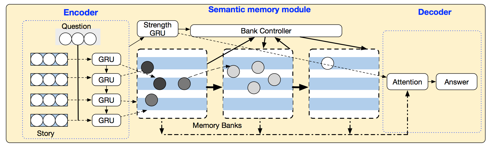
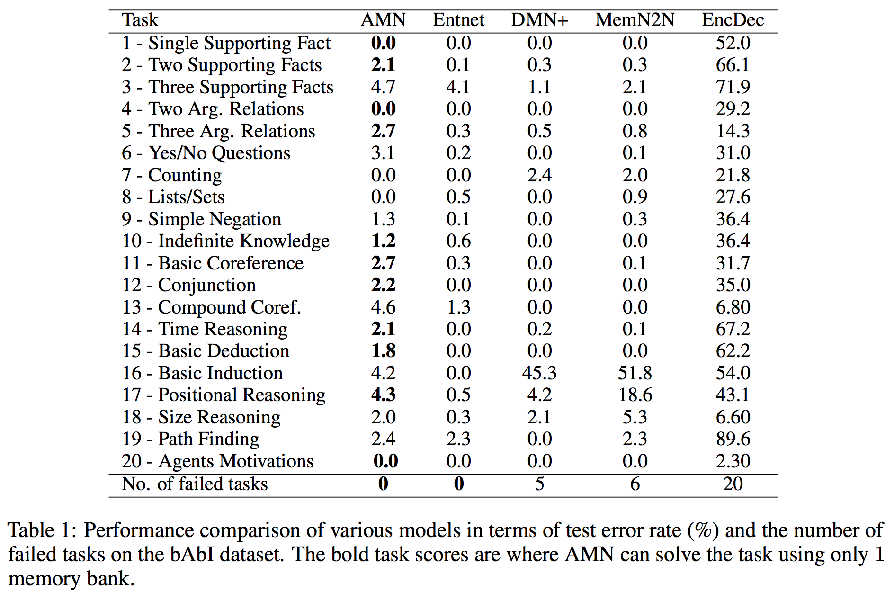

Adaptive Memory Networks
Статья о новой архитектуре с внешней памятью, причем архитектура модуля памяти зависит от входных данных. Статья не очень хорошо написана в плане обозначений и аккуратности в написании формул, поэтому понять, что имели в виду авторы, не всегда представилось возможным.
Постановка задачи
В статье решают задачу Question Answering. Имеется некая история (набор предложений) \(l_1, \dots, l_N\) и вопрос (или несколько вопросов) \(q\) по этой истории (тоже предложение), необходимо найти ответ \(a\). Часто ответом является какое-то слово, или ответ выбирается из нескольких вариантов, поэтому по сути мы решаем задачу классификации.
Задача решается на уровне слов, то есть все \(l_i\) и \(q\) - это последовательности слов из словаря.
Стандартный подход к решению
В статье End-to-End Memory networks (NIPS'15) предложили следующий алгоритм поиска ответа:
- Для всех предложений истории и запроса найти скрытое представление \(m_1, \dots, m_N\) и \(u\) соответственно.
- Вычислить веса преложений: \[p_i = \text{softmax}_i(u^T m_i)\]
- Для всех предложений истории найти также выходные векторы \(c_1, \dots, c_N\). Найти скрытое представление ответа \[o = \sum_i p_i c_i\]
- Решающее правило классификации (вероятности ответов): \[a = \text{softmax}(W(o+u))\]
Все веса обучаются end-to-end с оптимизацией кросс-энтропии.
Основная задумка авторов
В описанном и других подходах для выдачи ответа необходимо просматривать всю память (\(m_1, \dots, m_N\)) для выдачи ответа. Авторы предлагают распределять слова (в виде скрытых представлений) по нескольким упорядоченным банкам памяти: в первом хранятся наименее релевантные вопросу слова, в последнем - наиболее. Тогда на этапе поиска ответа мы сможем просматривать только несколько последних банков, и это сэкономит время.
Каждое слово сначала попадает в первый банк, а потом может быть перенесено в следующие. Если в последнем банке становится слишком много слов, создается новый банк. Эти два действия требуют дискретное решение. Авторы утверждают, что они придумали аналог reparametrization trick для распределения Бернулли так, что случайность вынесена из обратного прохода в вычислительном графе. Но как они это делают, написано не особо понятно (да, именно самый интересный момент). Однако благодаря наличию этих двух действий сеть становится динамической и изменяет структуру в зависимости от входных данных.
Архитектура
Вычислительный граф состоит из кодировщика (обрабатывает слова входных предложений и вопроса), адаптивного модуля памяти (распределяет слова по памяти) и декодировщика (генерирует ответ, используя банки памяти).
Кодировщик
Кодировщик для каждого слова определяет скрытое представление, а также релевантность вопросу (число от 0 до 1).
Получение скрытых представлений для слов. Пропустить предложение (по словам) через GRU с embedding-слоем. В отдельной lookup-матрице храним скрытые состояния для слов в словаре. Сначала они инициализируются нулями, и каждый раз, когда слово встречается в предложении, его скрытое состояние из GRU прибавляется к соответствующей этому слову строке lookup-матрицы.
Вопрос также пропускаем через GRU, но в lookup-матрице состояний его не учитываем. Скрытым представлением вопроса \(h_q\) будем считать скрытое состояние, в котором остановилась GRU при обработке вопроса.
Получение релевантностей для слов (Strength GRU). Сначала все релевантности инициализируются случайно (GlorotNormal). Когда слово \(i\) встречается в предложении, его релевантность обновляется. Это обновление \(s_i^t\) задается в виде одного шага GRU, которая на вход, помимо предыдущего значения релевантности \(s_i^{t-1}\), также берет скрытое состояние \(w_i\) для этого слова в предложении и скрытое представление вопроса \(h_q\).
Адаптивный модуль памяти
В этом модуле слова из истории распределяются по упорядоченным банкам памяти, каждое слово хранится в виде тройки (индекс в словаре, скрытое состояние, релевантность). Ниже описаны четыре действия, они выполняются в указанном порядке для всех банков по очереди после обработки каждого нового предложения кодировщиком. Почти все из этого есть детерминированные дифференцируемые операции, кроме двух случаев, когда для принятия дискретого решения используется контроллер.
- Добавить/обновить слова в банке (после того, как кодировщик обработал предложение \(l\) и остановился в состоянии \(h_l\)). Если слово встретилось впервые, его добавляют в первый банк, при этом скрытое представление берут из lookup-матрицы. Если слово уже есть в каком-то банке, его состояние обновляют с помощью одного шага GRU, берущей на вход, помимо предыдущего состояния, состояние \(h_l\). В общем, здесь обновляют состояния и не трогают релевантности.
- Распространение обновлений. Чтобы учитывать порядок слов в предложении, при обновлении состояний каких-то слов в банке также обновляются слова, которые состоят с этими словами в синтаксической связи.
- Перенос слов в следующие банки. Контроллер на основе скрытого состояния слова в банке и его релевантности может принять решение перенести соответствующую слову тройку в следующий банк. После этого шага выполняется обновление релевантностей.
- Создание нового банка. Контроллер на основе скрытых состояний слов в последнем банке может принять решение создать новый пустой банк. В этом случае для последнего банка еще раз повторяются обновление, распространение и перенос.
Контроллер описывается как-то так: задаем его решение в виде распределения Бернулли с параметром \(p \in \{0, 1\}\), вычисляемом небольшой сетью по соответствующему входу (скрытое состояние и релевантность для переноса слова, скрытые состояния слов в последнем банке для создания нового банка). А чтобы параметр был таким, используем специальную функцию потерь.
Декодировщик
Декодировщик работает так же, как в стандартном подходе (выше), только память вместо скрытых представлений предложений задается банками слов. Скрытое представление ответа считается для каждого банка отдельно, а потом усредняется с весами, затухающими для менее релевантных банков.
Итоговая схема архитектуры:

Обрабатываем предложения по очереди, пропуская каждое через кодировщик и выполняя обновление памяти. В конце ищем ответ с помощью декодировщика, которому достаточно просмотреть не все банки, а только несколько последних.
Функция потерь
Итоговый критерий качества - это сумма трех компонент:
- Кросс-энтропия
- Регуляризатор на релевантности, который притягивает релевантность каждого слова к взвешенной сумме релевантнстей слов, состоящих в синтаксической связи с этим словом (веса зависят от силы этой близости)
- Регуляризатор на параметр контроллера \(p\). Параметр контроллера задает нам распределение над числом банков. Введем ожидаемое значение числа банков в виде геометрического распределения с некоторым параметром, близким к единице, и увеличивающимся при увеличении длины предложения. Регуляризатор - это KL-диверенция между двумя указанными распределениями на число банков. Если нарисовать значение регуляризатора при увеличении \(p\), то получается выпуклая вниз функция с резкими краями. Видимо, из-за этих резких краев она тянет \(p\) к нулю или единице.
Модель обучается end-to-end оптимизацией суммы этих трех компонент.
Эксперименты
Эксперименты проводились на стандартном для данной задачи датасете bAbI с вопросно-ответными парами. Предложенный алгорим работает хуже, чем state-of-the-art, но зато просматривает меньшую долю памяти при поиске ответа (меньшую до двух раз).

Итог
В статье как-то невнятно описали основную фишку про то, как же происходит обработка дискретных решений при обратном распространении ошибки. В остальном, кроме идем создания новых банков, ничего особо впечатляющего нет, в том числе в экспериментах.